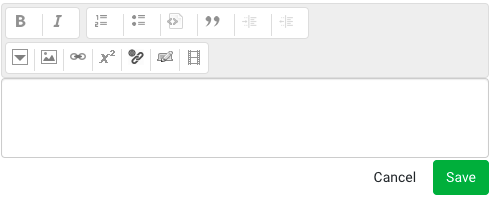

Schemas
Table of Contents
Introduction
At Oppia, we often want to describe the possible structure of some data. This data could be as simple as the boolean value of a checkbox in a user’s preferences, or it could be more complex like the valid arguments to one of our backend API controllers. We describe these data using schemas.
A schema describes the structure of data in a machine-readable format so that generic utility functions can operate on arbitrary data so long as the data comes with a schema. For example, schemas let us:
Validate provided data to make sure it conforms to the expected schema.
Automatically generate forms that let a user provide data in a form specified by a schema.
Write a schema
A schema is just a dictionary that takes the form described below:
Required keys:
type: The type of the data. Must be one of the following types. Unless otherwise stated, the type corresponds to the Python type of the same name.boolintfloatbasestring: A type that includes both thebytesandstrtypes in Python 3. Normalization will not decode the data, even if abytesobject is provided.unicode: Thestrtype in Python 3, which was theunicodetype in Python 2. This type also accepts abytesobject, which will be automatically decoded according to UTF-8 during normalization.listdicthtml: A string (bytesorstrin Python 3) with HTML code. When normalized, the HTML code will be sanitized bycore.domain.html_cleaner.clean(). Abytesobject may also be provided, which will be automatically decoded acording to UTF-8 during normalization.custom: A custom object type defined inextensions/objects/models/objects.py.object_dict: A dictionary that corresponds to a domain object (an object whose class is defined in the domain layer).unicode_or_none: Accepts data of typeunicodeorNone. If the data is notNone, it is normalized as if it were of typeunicode.
Optional keys:
choices: A list of possible values. The data must exactly match one of the choices.validators: A list of dictionaries, each of which has a sole keyidthat maps to the name of a validation function. The validation functions are defined as static methods ofschema_utils._Validators. To conform to the schema, data must pass all validators provided in the schema.ui_config: A dictionary of configuration parameters for how the data should be displayed. Note that this key only applies when the schema data is being displayed as a form. The dictionary may contain any of the following keys:rows: Only allowed for typeunicode. If specified, the value must be a positive integer. If this value is omitted, the unicode field is displayed as a regular<input>field. Otherwise, it is displayed as a textarea with the given number of rows.placeholder: Only allowed for typeunicode. If specified, the value must be a string, which will be the placeholder for the input field.coding_mode: Only allowed for typeunicode. If specified, the value must be a string equal to eithernoneorpython. If this value is specified, a CodeMirror instance with the appropriate syntax highlighting is used as the input area, and therowsandplaceholderproperties above are ignored.add_element_text: Only allowed for typelist. If specified, the value must be a unicode string. If this value is omitted, no changes are made to the ‘Add element’ button; otherwise, the default ‘Add element’ text is replaced with the given value.size: Only allowed for typehtml. If specified, the value must be a string equal to eithersmallorlarge. Ifsmall, a 2-line RTE is shown; iflarge, a 10-line RTE is shown.
Keys for certain types:
If the type is
object_dict, the schema must also include exactly one of the following keys:object_class: If this key is provided, the value should be the domain object class. During normalization, the data will be passed to the class’sfrom_dictmethod to construct the object, and then the object’svalidate()method will be called.validation_method: If this key is provided, its value should be a function that can validate the provided dictionary. During normalization, the function will be called with the data as its sole argument, and then the data will be returned. Note that the validation function should not return anything and should raise an exception if it finds invalid data.
If the type is
list, the following keys apply:len(optional): The required length of the list. Normalization will fail if the list length differs from the value of this key.items(required): A schema that describes each object in the list. Normalization will recursively normalize each of the list elements according to this schema.
If the type is
dict, the following keys apply:properties(required): A list of dictionaries. Each dictionary describes a key-value pair in the data and has exactly two keys:name: The key in the dictionary that the schema describes.schema: A schema describing the associated value.
For example, suppose we want to describe a dictionary with a single key,
version, whose value is an integer. We could do so with the following schema:{ "type": "dict", "properties": [ { "name": "version", "schema": { "type": "int" } } ] }
In an editor, the fields for the properties will appear in the same order as they appear in the list.
description(optional): A human-readable description.
The code that handles schemas is in schema_utils.py.
Uses for schemas in Oppia
Configuration values
The admin page exposes many configuration options, and we define what kinds of values we expect using schemas. In core/domain/config_domain.py, we define schemas for each configuration option. Then we can automatically generate the forms in the admin page for changing these values based on their schemas.
Schema-based forms
Oppia uses lots of forms, and it’s tiresome to have to write each one from scratch each time. To get around this, we have built a schema-based form framework that allows such forms to be built declaratively. From each schema, we know the type of the form field, what restrictions we want to impose on user input (from the validators), and how the form should be displayed (from the ui_config key).
Note that this framework isn’t meant to be exhaustive; it is meant to simplify form creation for the more common cases. Custom forms can still be written using the methods referenced in Creating Objects.
In the frontend, the components/forms/schema-based-editors/ directory contains the schema-based-editor component which takes a schema and generates a form whose return value satisfies the schema. The schema can be annotated with UI configuration options to tell the form how to display itself. You can also use FormBuilder to create a custom form; the only requirement is that the return type matches that defined by the schema.
For example, the story-node-editor component includes a schema-based editor with the following HTML:
<schema-based-editor id="storyNodeOutline"
schema="OUTLINE_SCHEMA"
local-value="editableOutline">
</schema-based-editor>
The OUTLINE_SCHEMA constant in the component’s TypeScript file like this:
$scope.OUTLINE_SCHEMA = {
type: 'html',
ui_config: {
startupFocusEnabled: false,
rows: 100
}
};
The result is a form where a user can provide an outline with some basic HTML markup:

Validating controller arguments
All arguments passed to the GET/POST/PUT/DELETE methods of the handler classes in the Oppia controller layer or in main.py need to be robustly validated before being passed to the domain layer in the backend. If we define schemas for the expected arguments, then we can use a generic schema validation system (SVS) to validate the arguments!
Schema validation system code
The following key methods are used in the validation of handler args through the SVS:
validate_and_normalize_args()inbase.py: This method is defined in the BaseHandler class of base.py. Thevalidate_and_normalize_argsmethod is responsible for validating and normalizing handler args. It also raises exceptions when those validation and normalization fail, for exampleInvalidInputExceptionandNotImplementederrors. (See this section for a list of common errors that may arise.)validate(handler_args, handler_args_schemas)inpayload_validator.py: This method is the core method of the SVS. It collects all the AssertionErrors raised from schema_utils.handler_args: The arguments from the HTTP request.handler_args_schemas: Schemas from the handler class as they are defined in the class’sURL_PATH_ARGS_SCHEMASorHANDLER_ARGS_SCHEMASclass variables. See this link for more information on how to write a schema and how to define these class variables.
normalize_against_schema(obj, schema)inschema_utils.py: This method normalizes the givenobjagainst its schema and raisesAssertionErrorif any of the validation checks fail. ThisAssertionErroris represented asInvalidInputExceptionto users.obj: The object which needs to be normalized.schema: The schema for the object.
How to write validation schemas for handlers
If you’re writing a new handler method, you’ll need to add schema validation for the handler args. To do this, follow the steps below:
List all the arguments passed to each method in the handler Make a list of all the arguments passed to each method in the handler class. Arguments received by a handler class method can be categorized into 3 types:
URL path elements : The data included in the path of the URL are called URL path elements. Example: in
url/<exploration_id>/, the exploration_id is a URL path element.Payload arguments: The data which come from payloads are called payload arguments. These data are typically received by PUT and POST methods.
URL query parameters: Query parameters are included at the end of a URL. Example: in
url/<exploration_id>?username=nikhil, there is a single URL query parameter with name “username” and value “nikhil”. URL query parameters are typically received by GET and DELETE methods.
If you face any difficulty with this step, see the debugging section or reach out to anyone mentioned in the contact section.
Determine the schema for each argument First, you should be familiar with how to write a schema. Then, you can write a schema for each argument, beginning with some boilerplate code. For more information, see the sections on important code pointers and examples.
Define schemas for URL path elements in URL_PATH_ARGS_SCHEMAS
The schemas for URL path elements should be written in the
URL_PATH_ARGS_SCHEMASclass variable in the handler class.The keys of
URL_PATH_ARGS_SCHEMASshould be the full set of URL path elements and the corresponding values should be the schemas for those args. If there are no URL path elements, thenURL_PATH_ARGS_SCHEMASshould be set to {} (an empty dict).
Example: Let
exploration_idbe a URL path element. Then, the schema forexploration_idshould look like:URL_PATH_ARGS_SCHEMAS = { 'exploration_id': { 'schema': { 'type': 'basestring' } } }
Define schemas for payload arguments and URL query parameter in
HANDLER_ARGS_SCHEMASThe schemas for payload arguments and URL query parameters are written in the
HANDLER_ARGS_SCHEMASclass variable in the handler class.After writing boilerplate code for the
HANDLER_ARGS_SCHEMAS, the value corresponding to each request method key (GET/PUT/POST/DELETE) should be a dictionary containing all the payload args and URL query parameters for the corresponding method. Each key of this dictionary should represent the name of an argument, and the corresponding value should be its schema. Note: While writing boilerplate code, make sure to remove the request keys which do not correspond to any request method in the handler class.
Example: Let
usernamebe an argument passed to the delete request method of a handler class. Then, the schema for the delete request method should look like:HANDLER_ARGS_SCHEMAS = { 'DELETE': { 'username': { 'schema': { 'type': 'basestring' } } } }
Important code pointers
The following points discuss the conventions adopted throughout the codebase for adding schemas to handler classes. Please read these conventions carefully.
Default and optional arguments
If an argument is not present in a request, and the schema for that argument is defined in the handler, then that argument is treated as “missing”. For missing args, schema_utils will raise an AssertionError which will be represented as an InvalidInputException by the validate_and_normalize_args() method.
To provide a default value for an argument, include a key with the name default_value along with the schema. The value for this key is the default value, which will be used if the argument is not present. If an argument is optional and it is not supposed to be updated with any default value, then the default_value key should map to None.
Example when a default value is provided: Let apply_draft be an optional argument which should take the default value False if no value for that argument is provided. In that case, the schema for apply_draft should look like:
{
'GET': {
'apply_draft': {
'schema': {
'type': 'bool'
},
'default_value': False
}
}
}
Example when no default value is provided: Suppose make_community_owned is an optional argument which should not take any default value if no value for that argument is provided with the request. In that case, the schema for make_community_owned should look like:
{
'PUT':{
'make_community_owned': {
'schema': {
'type': 'bool'
},
'default_value': None
}
}
}
For more information refer to our examples.
Domain object arguments: Schemas with type object_dict
Objects which are represented by classes written in the domain layer of the codebase are called domain objects. These classes typically include methods to validate their objects.
For validating domain objects through the SVS, there are two preferred solutions:
Case 1: object_class key
Many of the domain objects do not get initialized with dictionaries,so they must be initialized by using their from_dict() methods. This case applies when the data coming from a request is a dict and the domain object the dict represents has a from_dict() method.
In this case, schemas should have the following two keys:
type: ‘object_dict’
object_class: class written in the domain layer of the codebase for the corresponding argument.
Example: Let new_rules be the list of dicts where each dict item is a representation of the PlatformParameterRule domain object in the platform_parameter_domain.py file. The schema for new_rules should look like:
HANDLER_ARGS_SCHEMAS = {
'POST': {
'new_rules': {
'schema': {
'type': 'list',
'items': {
'type': 'object_dict',
'object_class': (
platform_parameter_domain.PlatformParameterRule)
}
}
}
}
}
Case 2: validation_method key
Sometimes, a domain object has a validate_dict() method that should be used for validation. These methods sometimes need extra arguments, for example to enforce strict validation. Since these cases cannot be handled generally, you’ll need to write a function that accepts the dictionary from the request and passes it to the domain object’s validate_dict() method, specifying other parameters as needed. Your function should be in the domain_objects_validator.py file.
The newly written function of the domain_objects_validator.py file should be directly passed into the schema with a schema key named validation_method. Schemas for these cases should have the following two keys:
type: ‘object_dict’
validation_method: method written in domain_objects_validator for calling the
validate()method from the domain class.
Example: Let change_list be a list of dicts where each dict item is a representation of the ExplorationChange domain object in the exp_domain.py file. The schema for change_list should look like:
HANDLER_ARGS_SCHEMAS = {
'PUT': {
'change_list': {
'schema': {
'type': 'list',
'items': {
'type': 'object_dict',
'validation_method': (
domain_objects_validator.validate_exploration_change)
}
}
}
}
}
Here, validate_exploration_change is the function you wrote.
For more information refer to our examples.
Extra validators
By providing validators, you can increase a schema’s functionality. The validators field in the schema contains a list of dicts, where each dict contains a key id whose value is the name of the validator. Existing validator methods can be found in the _Validator class of schema_utils.py. You can use the existing validators or write new ones.
Example: Let us assume that language_code is a handler arg that needs to be validated in order to check whether it is a supported language code. The validator checking this is already written in schema_utils.py, so the schema for language_code would look like:
HANDLER_ARGS_SCHEMAS = {
'PUT': {
'language_code': {
'schema': {
'type': 'basestring',
'validators': [{
'id': 'is_supported_language_code'
}]
}
}
}
}
Extra arguments
Any received arguments which do not correspond to a schema in the handler class are treated as extra arguments. By default, schema_utils.py will raise an AssertionError for extra args. However, for HTML handlers, extra arguments are allowed. (This accommodates e.g. utm parameters which are not used by the backend but needed for analytics. See this link for an explanation.) Note that the schema for HTML handlers can be written in the usual way. The functionality for allowing extra arguments in HTML handlers is already handled by the schema validation infrastructure.
Handlers with no arguments
Handlers with no request arguments still need a schema defined, otherwise you will face a NotImplemented error. In this case, the schema should look like the following (note that the keys for HANDLER_ARGS_SCHEMAS depend on which handler methods are present):
URL_PATH_ARGS_SCHEMAS = {}
HANDLER_ARGS_SCHEMAS = {
'PUT': {},
'GET': {},
'PUT': {},
'POST': {}
}
Post schema operations
After writing schemas for a handler class, make sure to update the request methods to use the normalized value after schema validation and remove any now-redundant validation checks.
Example: Replace the request keyword in the backend with the normalized_request keyword and the payload keyword with the normalized_paylaod keyword so that the normalized value obtained after schema validation can be used in the backend.
self.request.get(‘version’) ----> self.normalized_request.get(‘version’)
self.payload.get(‘username’) ----> self.normalized_payload.get(‘username’)
Common errors faced
When writing handler args, you may encounter NotImplementedErrors or InvalidInputExceptions. Here is how to handle these:
NotImplementedError
Description: This error will be raised if any necessary schemas (i.e,
HANDLER_ARGS_SCHEMASorURL_PATH_ARGS_SCHEMAS) are not present in the corresponding handler class.How to resolve: This error message is raised with the name of the handler which is missing a schema definition. Add schemas to the specified handler class.
InvalidInputException
Description: This error will be raised if schema validation failed for any argument. It may be due to extra arguments, missing arguments or any type mismatch.
How to resolve: This error message is raised by the
validate_and_normalize_args()method with the name of the argument for which schema validation failed. By looking at error messages and stack traces, you can find which argument is failing the schema validation test and debug.
Examples for reference
Examples of PRs for different types is given below:
Debugging tricks
When writing the schema for a handler class, you will often need to add a couple of print statements to gain information about the arguments coming from request. In this section we will add a schema step by step for ExplorationRightsHandler.
Find the handler class.
ExplorationRightsHandleris present in theeditor.pyfile.Identify the request methods.
ExplorationRightsHandlercontains PUT and DELETE request methods.Make a list of all arguments.
URL path elements:
exploration_idPayload arguments:
version,make_community_owned,new_member_username,new_member_role,viewable_if_private.URL query parameters:
username
Add print statements Add these print statements in the
validate_and_normalize_args()function ofbase.py. Make sure to add these print statements after the printed variables have been declared.print('\n'*3) print('------------'*3) print('Request url = ',self.request.uri) print('Handler class name = ',handler_class_name) print('handler_args = ',handler_args) print('Arguments = ', self.request.arguments()) print('Iterating over arguments...') for j in self.request.arguments(): print(j, self.request.get(j)) print('URL path elements = ', self.request.route_kwargs) print('Request method = ',request_method) print('HANDLER_ARGS_SCHEMAS = ', self.HANDLER_ARGS_SCHEMAS) print('URL_PATH_ARGS_SCHEMAS = , ', self.URL_PATH_ARGS_SCHEMAS) print('GET_HANDLER_ERROR_RETURN_TYPE', self.GET_HANDLER_ERROR_RETURN_TYPE) print('------------'*3) print('\n'*3)
Hit the handler through frontend Start the server and hit the handlers from the frontend. Then look for your print statements in the terminal. For
ExplorationRightsHandler, the print logs should look like:------------------------------------ (u'Request url = ', 'http://localhost:8181/createhandler/rights/QuWbhgRTovXr') (u'Handler class name = ', 'ExplorationRightsHandler') (u'Arguments = ', ['csrf_token', 'payload', 'source']) Iterating over arguments... ('csrf_token', u'1622997677/wOV5q43bIZf1cvOhCB4vrQ==') ('payload', u'{"version":1,"new_member_role":"owner","new_member_username":"nikhil"}') ('source', u'http://localhost:8181/create/QuWbhgRTovXr#/settings') (u'URL path elements = ', {u'exploration_id': 'QuWbhgRTovXr'}) (u'Request method = ', 'PUT') (u'HANDLER_ARGS_SCHEMAS = ', {u'DELETE': {u'username': {u'type': u'basestring'}}, u'PUT': {u'make_community_owned': {u'default_value': None, u'type': u'bool'}, u'new_member_role': {u'default_value': None, u'type': u'basestring'}, u'new_member_username': {u'default_value': None, u'type': u'basestring'}, u'viewable_if_private': {u'default_value': None, u'type': u'bool'}, u'version': {u'type': u'int'}}}) (u'URL_PATH_ARGS_SCHEMAS = , ', {u'exploration_id': {u'type': u'basestring'}}) ------------------------------------Write the schema by following the boilerplate code Writing the schema is the most crucial part, and it is important to get this correct. The print logs from the previous step can help you get started, but please be sure to dig into the backend and frontend code, and follow calls to methods/functions to see how the incoming data is used. This will help you avoid making errors. In particular:
For the backend: Try to read code as well as docstrings of all the methods which use the arguments from the request.
For the frontend: Try to read the functions which are associated with the request URL.
The eventual schema for ExplorationRightsHandler should look like:
class ExplorationRightsHandler(EditorHandler): """Handles management of exploration editing rights.""" URL_PATH_ARGS_SCHEMAS = { 'exploration_id': { 'schema': { 'type': 'basestring' } } } HANDLER_ARGS_SCHEMAS = { 'DELETE': { 'username': { 'schema': { 'type': 'basestring' } } }, 'PUT':{ 'version': { 'schema': { 'type': 'int' } }, 'make_community_owned': { 'schema': { 'type': 'bool' }, 'default_value': None }, 'new_member_username': { 'schema': { 'type': 'basestring' }, 'default_value': None }, 'new_member_role': { 'schema': { 'type': 'basestring' }, 'default_value': None }, 'viewable_if_private': { 'schema': { 'type': 'bool' }, 'default_value': None } } }
Remove print statements
Remove all the print statements and verify schema validation by again hitting the handler from the frontend.
Contact
If you have any questions, please contact one of:
Rohit (@rohitkatlaa)
Vojtech (@vojtechjelinek)
Nikhil (@Nik-09)